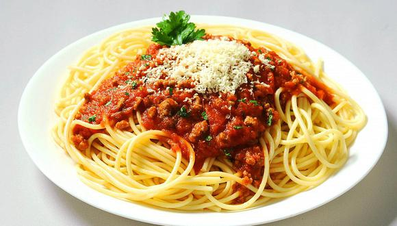

Pasta con Salsa Bolognesa
Tallarines con Salsa Bolognesa, con carne y salsa de Tomate
Ingredientes Para la Salsa
- Aceite
- Cebolla
- Ajo
- Pimiento Rojo
- Carne molida especial
- Pimenton, Laurel, Romero, pimienta negra, sal
- Salsa de tomate
- (Opcional) Zanahoria
Pasos a seguir
- Hervir agua y poner a cocinar fideos
- Saltear Cebolla y Ajo
- Agregar carne y cocinar hasta que cambie de color
- Agregar salsa de tomate
- Revisar la cocción de los fideos!
- Agregar Condimentos a gusto y opcionalmente una zanahorŕa rayada
- Mezclar y revolver con cuchara mientras se cocina (20 min.)
Si has seguido bien los pasos y controlado los tiempos, la pasta se habrá cocinado casi al mismo tiempo que lleva hacer la salsa
Volver al menú de Recetas de Odín